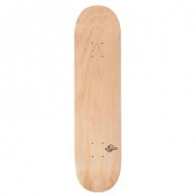
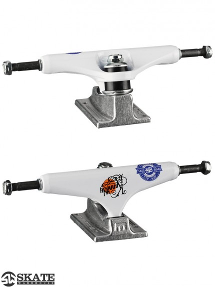
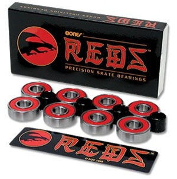
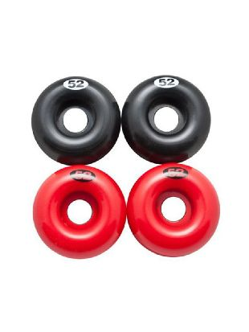
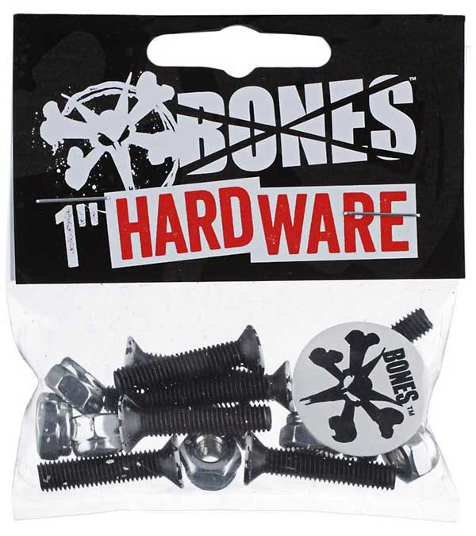

Prodotti
-Negozi Online
GUIDA ALL'ACQUISTO
Tavola

Caratteristiche Fondamentali:
Esistono tavole di vario tipo e genere. Nel corso del tempo sono stati impiegati diversi materiali e sono stati apportati molteplici
miglioramenti tecnologici. Le più diffuse sono in legno (7 strati di acero), ce ne sono poi in fibra di vetro, miste, ecc..
La prima cosa da considerare nella scelta di una tavola è la disciplina praticata. Le differenze infatti sono importanti sia in
dimensioni che in materiali utilizzati fra uno stile e l’altro. Vanno poi considerate la propria altezza e la dimensione dei piedi,
sebbene siano indicative.
L’acquisto migliore è quello effettuato in uno sk8 shop dove il personale potrà dare le indicazioni più utili. Indicativamente per
gli amanti del vert e degli skatepark una tavola larga (20 cm o più) è una buona scelta, se invece la disciplina praticata è lo
street è preferibile stare su tavole più strette (20 cm o meno), in quanto favoriscono maggiormente le rotazioni sul proprio asse
agevolando i flip. Se invece intendete lo skate come mero mezzo di trasporto o vi piace il downhill allora la scelta cadrà su tavole
lunghe e larghe. Una volta focalizzata l’attenzione sulla dimensione corretta non resta che scegliere la grafica più adatta.
Altro elemento che concorre nella personalizzazione della tavola è il grip, ovvero la speciale carta abrasiva riposta sulla tavola.
Esso è infatti personalizzabile con grafiche o incisioni a seconda del gusto.
Truck

Caratteristiche Fondamentali:
Altro elemento fondamentale nella costruzione dello skate perfetto sono i truck, snodi metallici a forma di “T” che fanno
da collegamento fra la tavola e le ruote e che permettono il movimento dello stesso. Ne esistono di vari materiali quali ferro,
alluminio e carbonio. Anche in questo caso più aspetti concorrono nella scelta del truck adatto, il primo è la dimensione dello
stesso. Di norma la larghezza dell’asse del truck (axle) dovrebbe essere uguale alla larghezza della tavola. Mentre l’altezza dello
stesso è determinata in base al tipo di disciplina che si vuole praticare e alle ruote montate, truck bassi sono più adatti allo
street permettendo flip tricks più semplici e stabili con la necessintà di montare ruote di piccole dimensioni, invece truck alti
e ruote grandi favoriscono la velocità in discipline come il downhill. Altro elemento di cui tener conto è la scleta dei bushing,
piccoli elementi in gomma di varia durezza che consentono il movimento del truck e conseguentemente dello skate. Anch’essi vengono
scelti in base allo stile dello skaters, bushing rigidi permettono una maggiore stabilità, mentre una scelta più morbida permette di
curvare di più, in ogni modo è possibile agire sulla durezza degli stessi agendo sull’apposita vite che fissa i bushing al truck.
Cuscinetti (Bearings)

Caratteristiche Fondamentali:
Sono piccoli anelli metallici inseriti all’interno delle ruote e poi fissati all’axle dei truck, benchè di piccole dimensioni hanno
un’importanza cruciale nello “scivolamento” dello skateboard.
La scleta dei cuscinetti adatti non è sempre semplice e spesso il prodotto più costoso non è quello più adatto alla causa.
Esiste una calissificazione degli stessi secondo un’unità di misura internazionale, la scala ABEC, la quale descrive la precisione
con cui le superfici dei componenti di un cuscinetto sono lavorate.
La nomenclatura va da ABEC 1 a ABEC 7 ma non sempre queste specifiche sono riportate dai costruttori. Aspetto di cui tener conto è
che quanto più è alto il numero della scala tanto più saran precisi ma delicati i cuscinetti, detto ciò è meglio sacrificare un po
di precisione per una durata maggiore.
Ruote (Wheels)

Caratteristiche Fondamentali:
Ultimo aspetto da considerare è l’acquisto delle ruote. In commercio ne esistono di varie dimensioni e colori, alcune sono dotate
di grafiche sul bordo per permettere una maggior peronalizzazzione del proprio skate.
Tra gli aspetti da considerare, la dimensione delle ruote e la durezza delle stesse, il tutto in base al tipo di disciplina da
praticare. Ruote strette e dure si prestano maggiormente allo streestyle, mentre ruote grandi e morbide permettono un maggior
scivolamento in terreni accidentati prestandosi di più a longboard o dirtboard.
Distanziali (Reesers)

Caratteristiche Fondamentali:
Sono sottili elementi di materiale plastico posti fra il truck e la tavola. Ne esistono di varie dimensioni e colori in base alle
esigenze dello skaters. La funzione svolta è duplice, mantengono una distanza fra in truck e la tavola permettendo l’assorbimento
e la dissipazione degli urti e non permettono alle ruote di bloccarsi al contatto con la tavola nelle frenate brusche.